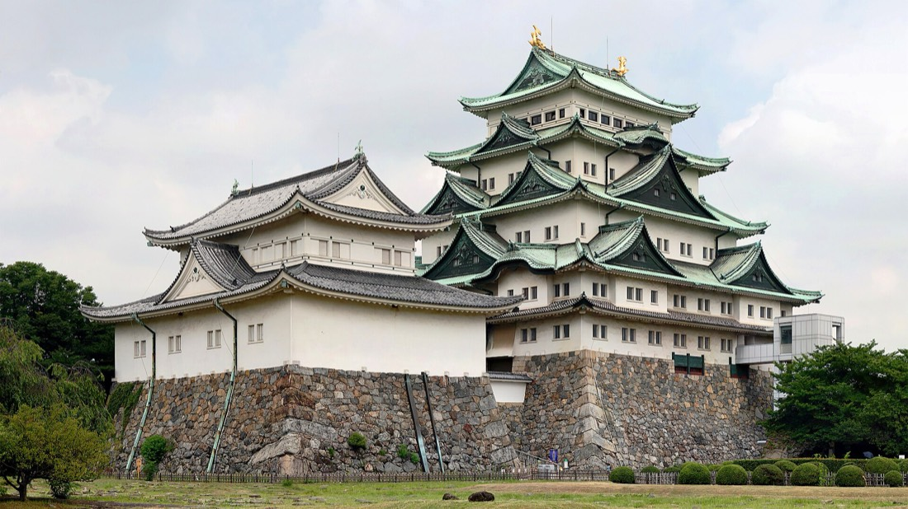

나고야
3박 4일
2026년 10월 16일 금요일 – 19일 월요일
사진 ⓒ Kentaro Ohno (CC BY-SA 2.0) · Bariston (CC BY-SA 3.0) · 663highland (CC BY 2.5) · 위키미디어 공용 (CC0 · PD)
2명 합계 · 낸 돈과 쓸 돈
1,741,945원 부터
많이 쓰면 1,963,894원
1명당 870,972 – 981,947원
1명당 870,972 – 981,947원
이미 낸 돈 · 원화
1,157,599원
1명당 578,800원
항공제주항공 7C1201 · 7C1202696,600원
숙박컴포트 인 나고야 사카에 에키마에 · 퀸베드룸 3박460,999원
현지에서 쓸 돈 · 엔화
65,804 – 90,798엔
584,346 – 806,295원 · 1엔 8.8801원
렌터카 하루대여료 8,580 · 통행료 7,820 · 주유 3,100~4,150 · 주차 4,100~4,700 · 면책보상 1,100~1,650 · ETC 550 · 편도 반납 0~1,32025,250 – 28,770엔
식사 8끼1명 12,307~21,244엔24,614 – 42,488엔
입장료수족관 1,830 · 산업기술기념관 800 · 미라이 타워 야간 1,8005,260 – 8,860엔
교통뮤스카이 왕복 2,860 · 1일차 지하철 1,050 · 도니치 620 · 4일차 지하철 210 · 셔틀 왕복 60010,680엔
쇼핑과 예비비는 넣지 않았습니다. 카페 넷과 휴게소 간식도 빠져 있는데 2명 5,000~9,000엔쯤 봅니다. 2일차 야키니쿠는 사카에 시세로 잡은 값입니다.
스이카에 충전할 것 · 1명
4,000엔
카드로 낼 수 있는 교통비가 3,840엔입니다
뮤스카이 운임 왕복운임 980엔은 스이카로 됩니다1,960엔
1일차 지하철 5회모두 1구 210엔 · 사카에 기점1,050엔
3일차 도니치 에코킷푸사카에 교통국 서비스센터에서 IC 결제620엔
4일차 지하철 1회사카에 → 메이테츠 나고야210엔
실물 스이카는 발행사 지역 밖이라 나고야에서 환불이 되지 않습니다. 8,000엔을 넘기지 말고 1일차에 5,000엔을 넣은 뒤 모자라면 3일차에 더 넣는 편이 낫습니다. 편의점과 자판기까지 쓸 거면 2,500~3,500엔을 더 얹으면 됩니다. 모바일 스이카는 앱에서 탈회하고 잔액을 돌려받을 수 있습니다.
뮤티켓 450엔은 좌석 지정권이라 스이카 잔액으로 개찰을 통과하는 방식이 아닙니다. 발매기에서 IC 카드로 결제할 수 있는지는 공식에 적혀 있지 않습니다. 충전은 지하철·메이테츠 역 발매기에서 되고 JR 나고야역 입금기는 1,000엔 단위만 받습니다.
현금으로 들고 갈 것 · 2명
15,000 – 19,000엔
카드가 안 되는 자리 7,240~8,240엔에
노점과 작은 가게 몫을 더한 값입니다
노점과 작은 가게 몫을 더한 값입니다
시라카와고 주차장현금만 · 정산기는 1,000·2,000·5,000·10,000엔 지폐2,000엔
아지도코로 카노카드를 받지 않습니다 · 1일차 점심2,800 – 3,800엔
도니치 에코킷푸역 발매기는 현금만 · 3일차1,240엔
전망대 셔틀버스차내 현금 · 왕복 1인 600엔1,200엔
다카야마 노점 먹거리콧테우시 초밥 두세 접시 · 아침시장 사루보보 · 당고3,000 – 4,000엔
시라카와고 간식히다로 고헤이모치와 고로케1,500 – 2,000엔
오스 노점 먹거리타이완 닭튀김 500~650엔 · 타코야키1,500 – 2,500엔
여유잔돈이 필요한 자리와 예상 밖 지출2,000엔쯤
1일차 밤 대안인 에비스야 키시멘집도 카드를 받지 않고 현금이나 앱 결제만 받습니다. 시마쇼와 미센 스미요시점도 현금만입니다.
쇼핑은 카드로 · 여유 자금
정하기 나름
사 올 것 세 곳과 백화점은 모두 카드가 됩니다
돈키호테 · 요도바시 · 칼디 · 몽벨카드와 면세 수속 모두 됩니다. 면세는 여권이 필요합니다.카드
오스 상점가점포가 1,200곳쯤이라 카드 여부가 가게마다 다릅니다일부 현금
쇼핑 예산과자와 기념품은 2명 5,000~10,000엔쯤이면 넉넉합니다. 옷과 전자제품은 사려는 물건에 따라 다릅니다.성향대로
스이카에는 교통비 4,000엔만 넣고 편의점·자판기 몫을 얹지 않았습니다. 실물 카드는 나고야에서 환불이 안 되니 남기지 않는 편이 낫습니다.
아낄 수 있는 자리
6,020엔
2명 합계
ETC 휴일할인10월 17일은 제외일이 아니라 적용됩니다3,700엔
도니치 에코킷푸구간 요금 1,130엔 대 승차권 620엔 · 2명1,020엔
4일차는 일반 특급 일반차뮤티켓 450엔을 안 사면 됩니다 · 2명900엔
수족관은 승차권 제시로2,030엔 → 1,830엔 · 2명400엔
환율은 2026년 9월 17일 기준환율입니다.
은행 환전과 카드 결제에는 수수료가 붙어 이보다 불리해집니다.
일정 동선에 맞춰 파는 곳별로 묶었습니다.
오구라 계열 과자와 유카리, 카에루 만주는 공항에서 팔지 않습니다.